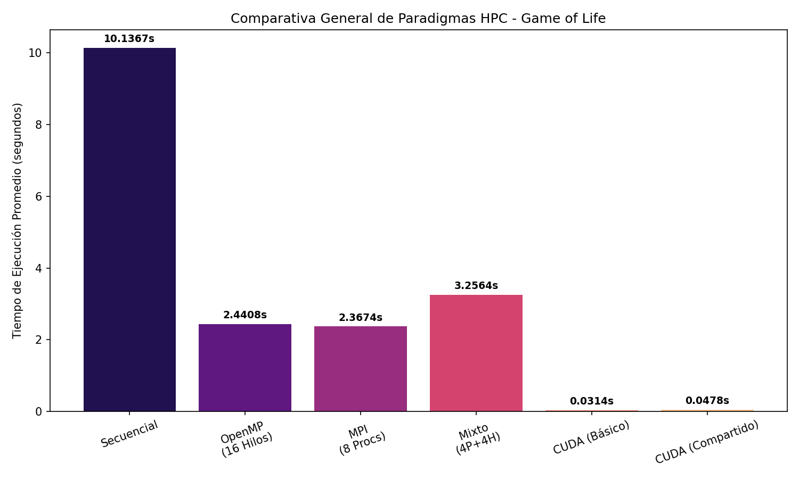
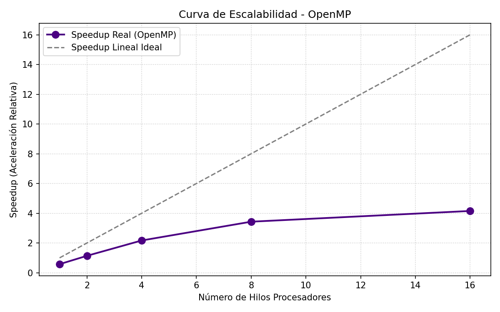
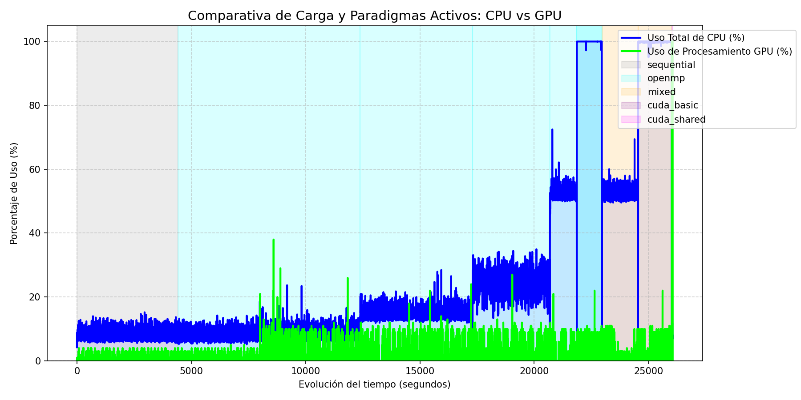
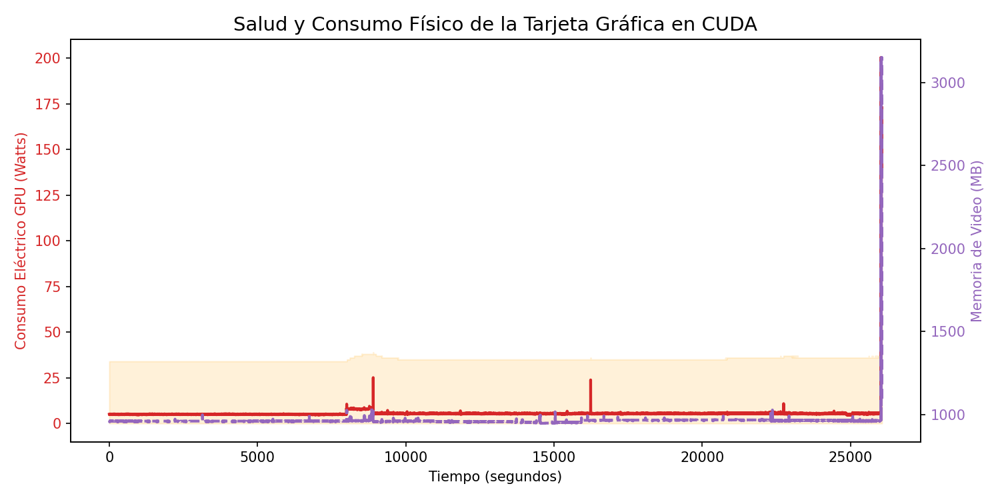

Análisis comparativo de rendimiento y escalabilidad entre implementaciones Secuencial, OpenMP, MPI, MPI+OpenMP y CUDA sobre una GPU NVIDIA RTX 4070.
Contexto
El Juego de la Vida de Conway (GoL) es un autómata celular definido sobre una grilla bidimensional toroidal donde cada célula puede estar viva o muerta. En cada generación, el estado de cada célula se actualiza en base a sus 8 vecinos (vecindad de Moore) con reglas simples:
// Reglas de Conway
si la célula está VIVA:
sobrevive si tiene 2 o 3 vecinos vivos
muere en cualquier otro caso
si la célula está MUERTA:
nace si tiene exactamente 3 vecinos vivosEste modelo es ideal como benchmark de HPC porque:
Cada célula realiza el mismo cálculo. No hay desbalance de trabajo entre hilos.
Con la misma semilla mt19937, todas las versiones producen exactamente los mismos resultados.
La computación crece cuadráticamente con el tamaño de la grilla, facilitando análisis de speedup.
Cada generación requiere que todos los hilos/procesos terminen antes de avanzar: patrón clásico de HPC.
Implementaciones
Todas las versiones usan vectores 1D planos de uint8_t para representar la grilla, garantizando memoria contigua y máximo aprovechamiento de caché. El acceso a la célula (i, j) se hace como grid[i * COLS + j].
Ejecuta todo en un único hilo de CPU. Sirve como línea base (baseline) para calcular el speedup de las demás versiones. No utiliza ninguna librería de paralelismo.
Es la referencia contra la que se mide si vale la pena paralelizar.
C++17 MSVC / g++Paraleliza el bucle de filas con la directiva #pragma omp parallel for. Cada hilo trabaja sobre un subconjunto de filas de la grilla de forma independiente.
Usa memoria compartida entre todos los hilos: no requiere comunicación, solo sincronización al finalizar cada generación.
#pragma omp parallel for \
schedule(static) num_threads(T)
for (int i = 0; i < rows; i++) { ... }Divide la grilla horizontalmente entre P procesos independientes con memoria distribuida. Antes de cada generación, cada proceso intercambia con sus vecinos las ghost rows (filas fantasma) necesarias para calcular los bordes.
MPI_Sendrecv(/* fila superior → vecino arriba */);
MPI_Sendrecv(/* fila inferior → vecino abajo */);Modelo híbrido típico de clústeres HPC reales. Combina los dos modelos anteriores: MPI distribuye la carga entre nodos y dentro de cada proceso OpenMP paraleliza las filas locales con múltiples hilos.
Permite escalar tanto en número de nodos como en núcleos por nodo simultáneamente.
MS-MPI OpenMP Hybrid HPCLleva toda la simulación a la GPU. La grilla completa se copia a VRAM una sola vez y el kernel lanza miles de hilos en paralelo masivo: un hilo por célula.
Cada hilo lee directamente desde memoria global de la GPU (GDDR6X). Acceso simple pero con latencia de memoria global en cada vecino.
Cada bloque de hilos copia su región de la grilla (más el borde de 1 célula) a la shared memory del SM, que es ~100× más rápida que la global. Reduce drásticamente la latencia de acceso a vecinos.
__shared__ uint8_t tile[TILE+2][TILE+2];
// cargar tile + halo
__syncthreads();
// calcular desde sharedConfiguración del Experimento
Para garantizar mediciones rigurosas y comparables, se utilizó la siguiente configuración de hardware y parámetros de benchmark.
Antes de cada sesión de benchmark se cerraron todos los procesos de usuario (navegadores,
clientes de mensajería, etc.) para minimizar el ruido y garantizar CPUs y VRAM libres.
El monitoreo de recursos (CPU por núcleo, VRAM, temperatura y Watts de la GPU) se capturó
con nvidia-smi y contadores de rendimiento de Windows a intervalos de 250 ms.
Datos Medidos
| Paradigma | Config | Tiempo total (s) | ms / generación | Speedup vs Seq. |
|---|---|---|---|---|
| Secuencial | 1 hilo | 3.62 | 18.09 | 1.0× |
| OpenMP | 1 hilo | 6.24 | 31.22 | 0.6× |
| OpenMP | 2 hilos | 3.16 | 15.80 | 1.1× |
| OpenMP | 4 hilos | 1.67 | 8.35 | 2.2× |
| OpenMP | 8 hilos | 0.98 | 4.90 | 3.7× |
| OpenMP | 16 hilos | 0.87 | 4.33 | 4.2× |
| MPI | 1 proceso | 4.75 | 23.75 | 0.8× |
| MPI | 2 procesos | 2.41 | 12.07 | 1.5× |
| MPI | 4 procesos | 1.25 | 6.24 | 2.9× |
| MPI | 8 procesos | 0.77 | 3.86 | 4.7× |
| MPI + OpenMP | 2P × 4H (8 workers) | 1.51 | 7.57 | 2.4× |
| MPI + OpenMP | 4P × 4H (16 workers) | 1.18 | 5.89 | 3.1× |
| CUDA Básico | RTX 4070 | 0.0143 | 0.072 | 252× |
| CUDA Shared Memory | RTX 4070 | 0.0178 | 0.088 | 205× |
| Paradigma | Config | Tiempo total (s) | ms / generación | Speedup vs Seq. |
|---|---|---|---|---|
| Secuencial | 1 hilo | 14.49 | 72.45 | 1.0× |
| OpenMP | 1 hilo | 25.16 | 125.8 | 0.6× |
| OpenMP | 2 hilos | 12.75 | 63.75 | 1.1× |
| OpenMP | 4 hilos | 6.70 | 33.50 | 2.2× |
| OpenMP | 8 hilos | 4.52 | 22.61 | 3.2× |
| OpenMP | 16 hilos | 3.51 | 17.56 | 4.1× |
| MPI | 1 proceso | 18.99 | 94.95 | 0.8× |
| MPI | 2 procesos | 9.64 | 48.20 | 1.5× |
| MPI | 4 procesos | 6.26 | 31.30 | 2.3× |
| MPI | 8 procesos | 3.44 | 17.21 | 4.2× |
| MPI + OpenMP | 2P × 4H (8 workers) | 5.60 | 27.99 | 2.6× |
| MPI + OpenMP | 4P × 4H (16 workers) | 4.65 | 23.26 | 3.1× |
| CUDA Básico | RTX 4070 | 0.0444 | 0.222 | 326× |
| CUDA Shared Memory | RTX 4070 | 0.0678 | 0.339 | 214× |

Fig. 1 — Tiempo total de ejecución por paradigma (mejor configuración de cada uno). CUDA domina con un margen arrasador.

Fig. 2 — Curva de speedup de OpenMP. Nótese el aplanamiento característico predicho por la Ley de Amdahl al superar los 8 hilos.

Fig. 3 — Uso de CPU (azul) y GPU (verde) a lo largo de la ejecución final monitorizada. Se observan los picos de CPU durante las pruebas paralelas y el impulso de GPU al entrar CUDA.

Fig. 4 — Telemetría física de la RTX 4070: consumo eléctrico (rojo) y VRAM utilizada (violeta). El benchmark CUDA eleva el consumo pero la temperatura se mantiene controlada.
Análisis
Contrario a lo esperado, en la grilla de 4096×4096 el kernel básico (~0.22 ms/paso) fue más rápido que el de shared memory (~0.34 ms/paso). Esto se debe a que el overhead de concierto de hilos para cargar el tile compartido supera la penalización de latencia de la memoria global cuando la grilla ya es tan grande que la GPU no puede esconder esa latencia con paralelismo de bloques. La shared memory brilla más en grillas donde el tile representa una fracción mayor de los datos activos.
El overhead del runtime de OpenMP (inicialización de la región paralela, sincronización de barrera al final de cada generación) supera al beneficio cuando se usa un solo hilo. A 2 hilos ya empieza a rendir igual al Secuencial, y a partir de 4 se nota el beneficio neto. Este resultado ilustra un principio básico de HPC: el paralelismo tiene un costo fijo que debe amortizarse con suficiente trabajo por hilo.
Con 4P×4H (16 workers), el Mixto tardó ~23 ms/paso en la grilla grande, mientras que MPI con 8 procesos llegó a ~17 ms/paso. La razón es la contención de núcleos: si el sistema tiene 16 núcleos y se lanzan 4 procesos MPI con 4 hilos OpenMP cada uno, los 16 hilos compiten por los mismos recursos de CPU (especialmente el ancho de banda de memoria L3/RAM), cosa que MPI puro distribuye mejor al asignar procesos dedicados.
El speedup de OpenMP sigue la curva prevista por la Ley de Amdahl: de 1 a 4 hilos la ganancia es casi lineal (duplicar hilos ≈ duplicar velocidad), pero de 8 a 16 el speedup adicional es marginal (3.2× → 4.1×). Esto indica que la fracción serial de la ejecución (coordinación, escritura del resultado, setup de iteraciones) representa aproximadamente el 20% del tiempo total.
En la grilla de 4096×4096, CUDA básico procesó cada generación en solo 0.22 ms frente a los 72.45 ms de la versión secuencial. Esto es posible porque la GPU puede lanzar simultáneamente millones de hilos independientes (uno por célula), eliminando por completo la serialización. Para algoritmos con este patrón de acceso (embarrassingly parallel), la GPU representa la arquitectura óptima.
| Puesto | Paradigma | ms / generación | Comentario |
|---|---|---|---|
| 🥇 1 | CUDA Básico | 0.22 | Paralelismo masivo GPU gana en escala |
| 🥈 2 | CUDA Shared Memory | 0.34 | Mayor overhead de sync en tile grande |
| 🥉 3 | MPI 8 procesos | 17.21 | Menor overhead que OpenMP por proceso dedicado |
| 4 | OpenMP 16 hilos | 17.56 | Comparte caché → contención en grilla grande |
| 5 | MPI+OpenMP 4P×4H | 23.26 | Overhead de coordinación doble |
| 6 | Secuencial | 72.45 | Baseline de referencia |